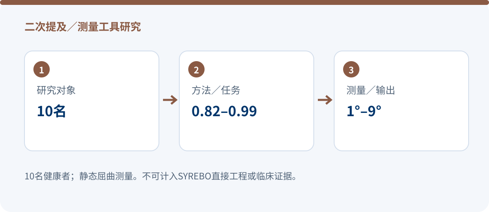

二次提及／测量工具研究 · 2024
air-guitar手指屈曲测量研究：实验设备为高校自研，SYREBO仅在引言出现
二次提及／测量工具研究
Validity and reliability of an air-guitar for measuring finger flexion in healthy participants
Kuvijitsuwan et al.
Scientific Reports
DOI: 10.1038/s41598-024-71094-y · 原始出处
证据范围：PMC11362323全文已核实。实验设备为清迈大学自研air-guitar；SYREBO只在引言商用设备列表中出现。
清迈大学自研air-guitar｜10名健康者｜非SYREBO实验
一句话结论：这篇论文不能与SYREBO直接工程研究混算。研究测试的是清迈大学自研air-guitar测量系统，SYREBO仅作为商用设备例子在引言出现。其价值在于手指静态屈曲测量的效度与重测信度，而不是SYREBO设备性能或疗效。

研究设计
研究纳入10名健康、右利手、无症状受试者，平均34.6岁，8男2女。实验比较air-guitar与Jamar手指量角器，并在同日上午、下午进行两次测量。
air-guitar由清迈大学自研，不是SYREBO产品。研究关注静态最大屈曲角度测量，系统分辨率为0.01°，而量角器通常按5°读取。
10名健康右利手受试者
0.82–0.99air-guitar重测ICC
1°–9°MDC95范围
核心结果
- air-guitar与量角器比较的一致性CCC为0.62–0.90，平均差约1°。
- air-guitar重测ICC为0.82–0.99；SEM为1°–3°，MDC95为1°–9°。
- 这些结果支持该自研系统的测量学表现，不能用作SYREBO设备验证证据。
这项研究增加了什么信息？
把这篇放入附录的价值，是展示“二次提及”与“直接实验”的区别。文献清单若只搜索品牌名，会把引言、讨论和参考文献中的提及误收为产品研究；必须回到方法学中的实际设备。
研究边界：必须与结果一起阅读
- 仅10名健康受试者，不能外推到患者。
- 仅测静态最大屈曲，未用3D动态金标准。
- 实验设备为高校自研；不是SYREBO直接临床或工程研究。
合规表述建议：这篇论文不能与SYREBO直接工程研究混算。研究测试的是清迈大学自研air-guitar测量系统，SYREBO仅作为商用设备例子在引言出现。其价值在于手指静态屈曲测量的效度与重测信度，而不是SYREBO设备性能或疗效。
文章来源与核验范围
Kuvijitsuwan et al. Validity and reliability of an air-guitar for measuring finger flexion in healthy participants. Scientific Reports (2024). DOI: 10.1038/s41598-024-71094-y.
设备名称、样本口径与数值结果均按上述已核实来源范围呈现；未取得的字段不作推断。
设备名称、样本口径与数值结果均按上述已核实来源范围呈现；未取得的字段不作推断。
本文为研究解读，不构成医疗建议。具体训练方案请在医生或治疗师指导下制定。